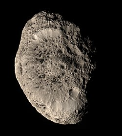
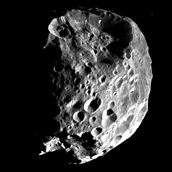

There are 274 moons known to orbit Saturn - the highest among all the planets.
24 are regular satellites that have a relatively stable, circular orbit close to the planet.
They were named after Titans, Giants and other characters from Greek mythology.
The biggest moon is Titan, a satellite bigger than the planet Mercury.
Other round moons are Rhea, Iapetus, Dione, Tethys, Enceladus, and Mimas.
Out of the irregularly-shaped satellite, Hyperion is the largest.
There are satellites like Pan and Daphnis that are refered to as shepherd moons.
They have distinct equatorial ridges formed from clearing Saturn's rings.
The 250 known irregular moons receie names of Celtic and Inuit gods, and Norse ice giants (with the exception of Phoebe.)
Inspired by Galileo's discovery of the moons of Jupiter, Christiaan Huygens constructed his own telescope with greater magnification.
He discovered Titan in 1655.
Giovanni Domenico Cassini discovered four more moons - Iapetus, Rhea, Tethys and Dione.
William Herschel discovered the last two round moons - Mimas and Enceladus.
Hyperion was discovered in 1848 by W. C. Bond, G. P. Bond and William Lassell.
Thanks to advancement in technology and the introduction of photography into astronomy, new moons were discovered - Phoebe in 1899, Janus and Epimetheus in 1966, and Helene, Telesto, and Calypso in 1980.
The Voyager program lead to the discovery of Atlas, Prometheus, and Pandora.
Pan was seen in archival images from that program in 1990.
All the other inner moons were discovered by the Cassini spacecraft.
Moons of Saturn are named after Titans, Giants, and other characters from Greek mythology.
John Herschel, son of William Herschel, was the first to suggest naming satellites of Saturn after Titans and Giants, since Cronus (Greek analogue of the Roman Saturn) is their leader.
The irregular moons are named after Celtic and Inuit gods, and Norse ice giants, depending on the group they are part of (with the exception of Phoebe, which was named before the convention.)
Saturn's moons can be generally divided into regular and irregular moons, depending on their orbits.

Hyperion, the biggest irregularly-shaped Saturnian moon
Apart from the seven major moons, there are 17 other regular satellites of Saturn - their orbits are nearly circular and have low inclinations.
The innermost moon (provisional name S/2009 S 1) is the smallest known Saturnian satellite and orbits near the B ring.
The next eight moons - Pan, Daphnis, Atlas, Prometheus, Pandora, Epimetheus, Janus, and Aegaon are all within the orbit of Mimas.
All but Atlas, Pandora, and Aegaon are shepherd moons, even though Atlas has an equatorial ridge.
Between the orbits of Mimas and Enceladus orbit three more satellites, known as the Alkyonides - Methone, Anthe, and Pallene.
The next two are trojans of Tethys - Telesto and Calypso, after which are the trojans of Dione - Helene and Polydeuces.
The last one is Hyperion, outside the orbit of Titan.
It is the largest of the non-round moons and is notable for its chaotic orbit and rotation and porous structure.
Mimas is the smallest of the seven gravitationally-rounded moons of Saturn.
It is smaller than the irregularly-shaped moon of Neptune Proteus.
A distinctive feature is the crater Herschel, named after the discoverer of Mimas.
Because of it, the moon resembles the fictional Death Star in Star Wars.
Enceladus is the sixth biggest moon of Saturn.
It is composed mostly of ice water.
Apart from craters, ridges and fractures, it has numerous geysers that shoot water vapors into space, part of which falls back as snow.
It is suspected that a liquid water ocean is underneath the ice crust, similar to Europa.
Many mission were proposed to search for life on Enceladus, but so far none have been approved.
Tethys is the fifth biggest satellite of Saturn.
It is an icy body and has one of the biggest craters on planetary bodies in the Solar System - Odysseus.
Just like Dione, Tethys has two trojans that orbit Saturn - Telesto and Calypso.
Dione is the fourth biggest Saturnian moon.
Similar to Rhea, Dione is heavily cratered, but features more chasmata and fossae (ridges).
Dione has two trojans, which are also moons of Saturn - Helene and Polydeuces.
Mimas, Enceladus, Tethys, and Dione.
Rhea is the second largest moon of Saturn.
The surface is heavily cratered and has some fractures (chasmata) similar to other cratered planetary bodies.
It is hypothesised that Rhea might have a tenuous ring system.
If confirmed, this would mark the first discovery of rings around a moon.
Titan is the biggest satellite orbiting Saturn and is one of two satellites bigger than the planet Mercury, the other being the Jovian moon Ganymede.
Titan has a thick orange athmosphere composed mostly of nitrogen and methane.
Liquid methane lakes are concentrated around the poles, the only possible spots on the surface for them to form.
The biggest lakes are Kraken Mare and Ligeia Mare.
The future mission Dragonfly will make a return to Titan in 2028 and will attempt to make a landing and conduct the first powered and fully controlled atmospheric flight on a natural satellite.
Iapetus is the third biggest moon of Saturn.
It is composed mostly of ice and has different coloration on both hemispheres.
A mountain ridge along the equator is still unexplained, but one suggestion is that it might have been a collapsed ring system.
Rhea, Titan, and Iapetus.
The Inuit group is a group of 36 satellites with prograde orbits.
Their semi-major axes range between 11 and 19 million km.
Their inclinations are greater than those of the Gallic group - between 43° and 51°, and their eccentricities are between 0.08 and 0.39.
Siarnaq is the biggest Inuit group member.
Other named members are Paaliq, Kiviuq, Ijiraq, and Tarqeq.
Based on the proximity to Saturn, there are three subgroups - Kiviuq (20 members), Paaliq (sole member), and Siarnaq (15 members).

Phoebe, the biggest moon in the Norse group
The Norse group is the biggest group 197 satellites, consisting of all the retrograde orbiting mooons.
Their semi-major axes range between 11 and 28 million km, their inclinations between 136° and 178° (retrograde) and their eccentricities between 0.02 and 0.91.
It is more broadly defined than the Inuit and the Gallic groups, so it is made up of more distinct subgroups.
Phoebe, the most massive irregularly-shaped satellite and the largest irregular one is actually part of the Norse group, despite being named after a Greek Titaness.
Attemps were made to recategorise the Norse group, even though there are no clear clusters.
Four groups were defined by Ashton et al. based on inclinations - Phoebe, Mundalfari, Kari, and low-inclined.
The Gallic group is comprised of 17 satellites, which have prograde orbits similarly to the Inuit group.
Their semi-major axes range between 16 and 19 million km (except one), their inclinations between 36° and 41° (lower than the Inuit group), and their eccentricities between 0.46 and 0.53.
Albiorix is the largest in the group.
Other named members are Bebhionn, Erriapus, and Tarvos.
S/2004 S 24 is an outlier, which has a semi-major axis of 23 million km, and an eccentricity of 0.07.
Pioneer was the first mission to Saturn, but it did not analyze the moons in great detail.
The Voyager 1 probe managed to send back the first high-resolution images of Saturn's satellites.
Surface features of various moons were seen for the first time.
Voyager 1 performed a close flyby of Titan, studying the atmosphere of the moon.
Both Voyager missions discovered new satellites around Saturn.
ESA joined NASA to launch the Cassini-Huygens spacecraft.
Cassini completed two flybys around Titan before releasing the Huygens lander.
Discoveries during the mission were evidences of liquid water beneath the Enceladus surface and geysers, hydrocarbon lakes on Titan, and new satellites of Saturn.
Proposed missions include Dragonfly, which is a probe that will explore Titan, and a few candidates for a mission to search life on Enceladus.
External links
{% include catnatural-satellites.html %}